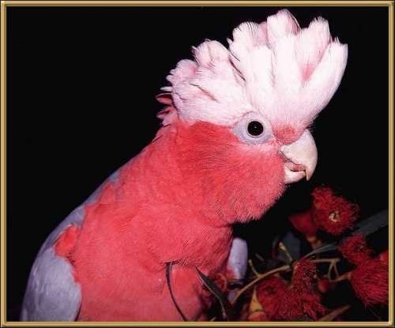

These are very noisy
birds! They live in huge flocks and are found throughout Australia. It's not at all
uncommon to see a field literally covered in these birds.They have an atypically lazy
flight pattern and one cartoonist always draws them wearing boots. There is a small town
in the Mallee called after them, because of the huge flocks found in the area.
35cm (14 inches)
Photographer: Gail J. Worth, Aves International